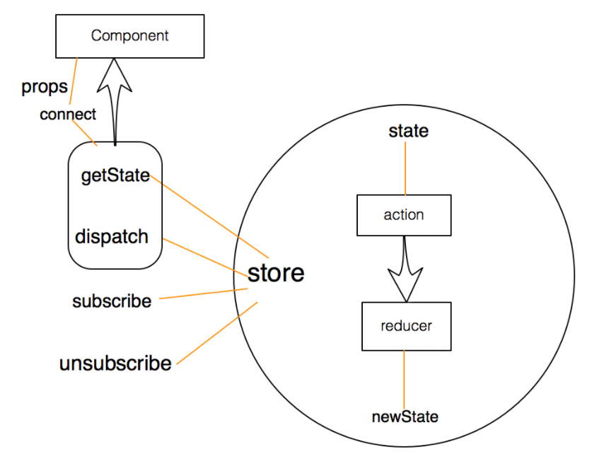

你在React项目中是如何使用Redux的? 项目结构是如何划分的？
参考答案
一、背景
redux是用于数据状态管理，而react是一个视图层面的库
如果将两者连接在一起，可以使用官方推荐react-redux库，其具有高效且灵活的特性
react-redux将组件分成：
- 容器组件：存在逻辑处理
- UI 组件：只负责现显示和交互，内部不处理逻辑，状态由外部控制
通过redux将整个应用状态存储到store中，组件可以派发dispatch行为action给store
其他组件通过订阅store中的状态state来更新自身的视图
二、如何做
使用react-redux分成了两大核心：
- Provider
- connection
Provider
在redux中存在一个store用于存储state，如果将这个store存放在顶层元素中，其他组件都被包裹在顶层元素之上
那么所有的组件都能够受到redux的控制，都能够获取到redux中的数据
使用方式如下：
<Provider store = {store}>
<App />
<Provider>connection
connect方法将store上的getState 和 dispatch 包装成组件的props
导入conect如下：
import { connect } from "react-redux";用法如下：
connect(mapStateToProps, mapDispatchToProps)(MyComponent)可以传递两个参数：
- mapStateToProps
- mapDispatchToProps
mapStateToProps
把redux中的数据映射到react中的props中去
如下：
const mapStateToProps = (state) => {
return {
// prop : state.xxx | 意思是将state中的某个数据映射到props中
foo: state.bar
}
}组件内部就能够通过props获取到store中的数据
class Foo extends Component {
constructor(props){
super(props);
}
render(){
return(
// 这样子渲染的其实就是state.bar的数据了
<div>this.props.foo</div>
)
}
}
Foo = connect()(Foo)
export default FoomapDispatchToProps
将redux中的dispatch映射到组件内部的props中
const mapDispatchToProps = (dispatch) => { // 默认传递参数就是dispatch
return {
onClick: () => {
dispatch({
type: 'increatment'
});
}
};
}
class Foo extends Component {
constructor(props){
super(props);
}
render(){
return(
<button onClick = {this.props.onClick}>点击increase</button>
)
}
}
Foo = connect()(Foo);
export default Foo;小结
整体流程图大致如下所示：

三、项目结构
可以根据项目具体情况进行选择，以下列出两种常见的组织结构
按角色组织（MVC）
角色如下：
- reducers
- actions
- components
- containers
参考如下：
reducers/
todoReducer.js
filterReducer.js
actions/
todoAction.js
filterActions.js
components/
todoList.js
todoItem.js
filter.js
containers/
todoListContainer.js
todoItemContainer.js
filterContainer.js按功能组织
使用redux使用功能组织项目，也就是把完成同一应用功能的代码放在一个目录下，一个应用功能包含多个角色的代码
Redux中，不同的角色就是reducer、actions和视图，而应用功能对应的就是用户界面的交互模块
参考如下：
todoList/
actions.js
actionTypes.js
index.js
reducer.js
views/
components.js
containers.js
filter/
actions.js
actionTypes.js
index.js
reducer.js
views/
components.js
container.js每个功能模块对应一个目录，每个目录下包含同样的角色文件：
- actionTypes.js 定义action类型
- actions.js 定义action构造函数
- reducer.js 定义这个功能模块如果响应actions.js定义的动作
- views 包含功能模块中所有的React组件，包括展示组件和容器组件
- index.js 把所有的角色导入，统一导出
其中index模块用于导出对外的接口
import * as actions from './actions.js';
import reducer from './reducer.js';
import view from './views/container.js';
export { actions, reducer, view };导入方法如下：
import { actions, reducer, view as TodoList } from './xxxx'1. 在 React 项目中使用 Redux 的流程
1.1 安装与配置 Redux
- 安装依赖：首先安装 Redux 和 React-Redux，通常还会使用 Redux Toolkit 来简化 Redux 的使用。
``bash<br> npm install redux react-redux @reduxjs/toolkit<br> ``
- 创建 Store：使用 Redux Toolkit 的
configureStore方法来创建 Redux 的 store。
```javascript<br> import { configureStore } from '@reduxjs/toolkit';<br> import rootReducer from './reducers';
const store = configureStore({<br> reducer: rootReducer,<br> });
export default store;<br> ```
1.2 创建 Reducer 和 Action
- 定义 Slice：在 Redux Toolkit 中，通常使用
createSlice方法来定义 reducer 和 action。
```javascript<br> import { createSlice } from '@reduxjs/toolkit';
const counterSlice = createSlice({<br> name: 'counter',<br> initialState: 0,<br> reducers: {<br> increment: (state) => state + 1,<br> decrement: (state) => state - 1,<br> },<br> });
export const { increment, decrement } = counterSlice.actions;<br> export default counterSlice.reducer;<br> ```
1.3 连接 Redux 与 React
- 提供 Store：使用
Provider组件将 Redux store 提供给整个应用。
```javascript<br> import React from 'react';<br> import ReactDOM from 'react-dom';<br> import { Provider } from 'react-redux';<br> import store from './store';<br> import App from './App';
ReactDOM.render(<br> <Provider store={store}><br> <App /><br> </Provider>,<br> document.getElementById('root')<br> );<br> ```
- 使用状态和派发动作：使用
useSelector获取状态，使用useDispatch派发动作。
```javascript<br> import React from 'react';<br> import { useSelector, useDispatch } from 'react-redux';<br> import { increment, decrement } from './counterSlice';
function Counter() {<br> const count = useSelector((state) => state.counter);<br> const dispatch = useDispatch();
return (<br> <div><br> <button onClick={() => dispatch(decrement())}>-</button><br> <span>{count}</span><br> <button onClick={() => dispatch(increment())}>+</button><br> </div><br> );<br> }
export default Counter;<br> ```
2. 项目结构的划分
2.1 典型的 Redux 项目结构
- src/
- components/：用于存放无状态的展示组件，通常只负责 UI 渲染。
- features/ 或 slices/：用于存放 Redux 相关的逻辑，每个功能模块一个文件夹。
- counterSlice.js：定义
slice和相关的 actions、reducers。 - reducers/：用于存放
rootReducer和其他手动管理的 reducers。 - index.js：组合所有 reducers。
- store/：用于存放 Redux 的 store 配置文件。
- index.js：创建并导出 Redux store。
- App.js：应用的根组件，通常在这里引入
Provider。 - index.js：入口文件，渲染根组件。
2.2 示例结构
src/
│
├── components/
│ └── Counter.js
│
├── features/
│ └── counterSlice.js
│
├── reducers/
│ └── index.js
│
├── store/
│ └── index.js
│
├── App.js
└── index.js3. 使用 Redux 的注意事项
- 全局状态管理：Redux 适合管理跨组件或跨页面的全局状态，但对于局部状态或简单的状态管理，可以考虑使用 React 的内置
useState和useContext。 - Redux Toolkit 的优势：通过 Redux Toolkit，简化了传统 Redux 的配置流程，减少了样板代码。
- 异步操作：通常使用 Redux Thunk 或 Redux Saga 处理异步操作，通过
extraReducers或自定义中间件来实现复杂的逻辑。